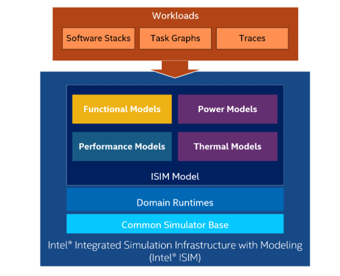

Intel® ISIM (Integrated Simulation Infrastructure with Modeling) is a versatile framework for simulating a system-on-chip (SOC) or an entire platform. It is fast enough to run real software workloads while generating functional, performance, power, and thermal profiles. Also, it has been designed to support coupling between different domains while maintaining domain modularity for easy development and integration as shown in the figure below:

The "QSP ISIM" package is an example of an end-to-end Intel® ISIM flow. The package augments the functional Quick Start Platform model with power and thermal properties, and is composed of four modules:
These models communicate through standard interfaces as shown in the figure below:
Note: The models used in this example have been intentionally kept simple for didactic purposes. Feel free to replace them by a more complex one if needed.
To run simulations, you need to install the latest version of the following Simics packages:
The functional model represents a generic PC, allowing us to run unmodified software such as Linux or Windows. For more information on the functional model, please refer to the functional QSP package.
The power consumption and thermal behavior of each core are purposely simple for this example and given in the equations below:
Each core has a Power-Management Unit that uses two concurrent algorithms to control power and thermal:
The Power-Management Unit takes a decision based on the output of those two modules. The algorithms used here are very simple behavioral models and can be replaced by more realistic ones.
Documentation on this module is located in the section "Sample Core Timing Model" of the "QSP-X86 target guide".
After installing Simics and the required packages, you can run the simulation from the project directory with the following command:
Linux environment:
simics targets/qsp-isim/qsp-isim-clear-linux.simics
Windows environment:
simics.bat targets\qsp-isim\qsp-isim-clear-linux.simics
This command sets up the functional model. The Simics command line interface should appear. You can then start the simulation by using the following command:
simics> run
This command will boot the linux OS of the simulated system. When the boot is done, the performance, power-manager and power/thermal models are instantiated and connected to the functional model. The default workload executed by the system is to create a .zip file of its bin directory ("time zip -9 zipped2 /bin/*\n"). The viewer window appears and starts plotting the curves (frequency, power, instructions per cycle and temperature of each the core). Depending on the simulation environment, you may observe a small delay (around 10 seconds) between the opening of the viewer window and the time the curves start being plotted. You should see a window looking like the following one:
You can find the viewer documentation in your project directory under [project_folder]/doc/Viewer.pdf
The time series are saved in the following file:
logs/sim_result/tracer0.csv
Finally, you can visualize the logs/sim_result/tracer0.csv file containing the time series of the previous simulation using the following command (from your project directory):
Linux environment:
bin/start-viewer -L=[simics-qsp-isim-package-installation_path]/targets/pvf_dsbs/config_machine0.pvf_dsb
Windows environment:
bin\start-viewer.bat -L=[simics-qsp-isim-package-installation_path]\targets\pvf_dsbs\config_machine0.pvf_dsb
Where [simics-qsp-isim-package-installation_path] is the path where QSP for ISIM package is installed.
You can also copy the pvf_dsb file to your project if you want to customize it.
Note: Exiting the Simics simulation does not automatically close the viewer window.
The simics script you have run in the previous section ([project_folder]/targets/qsp-isim/qsp-isim-clear-linux.simics) is a trampoline to the actual script, containing the model parameters and instantiation of the simulated system. This "original" script is located in your simics installation folder at [simics_install_folder]/simics-6-install/simics-qsp-isim-6.0.pre0/targets/qsp-isim/qsp-isim-clear-linux.simics.
To be able to tune simulation parameters and adapt the system to your needs, you need to copy the original script [simics_install_folder]/simics-6-install/simics-qsp-isim-6.0.pre0/targets/qsp-isim/qsp-isim-clear-linux.simics and paste this copy in your project folder at the following location: [project_folder]/targets/my-qsp-isim/ (we chose here to name the simulation folder my-qsp-isim but you can choose any name that you would like)
You can now tune the parameters of the new script you have just created: [project_folder]/targets/my-qsp-isim/qsp-isim-clear-linux.simics.
Finally, you can run it from the project directory, with the following command:
Linux environment:
simics targets/my-qsp-isim/qsp-isim-clear-linux.simics
Windows environment:
simics.bat targets\my-qsp-isim\qsp-isim-clear-linux.simics
machine0.docea.docea_physical_model.compute-average-metrics Displays a table containing the frequency and energy per instruction, averaged on all cores, from the beginning of the simulation to the current simulation time.@conf.machine0.docea.docea_physical_model.initial_time_s Outputs the time when the physical simulation was enabled for each core.@conf.machine0.docea.docea_physical_model.all_signals_values Outputs the current physical and functional state of each core (temperature, power, etc..).The serial console of the system is used to interact with the functional model. By default, the system creates a .zip file of its bin directory (for demo purposes). However, you are free to execute whatever is relevant for your use case.
The workload used in the example is a steady workload. However, there is no technology limitation to enhance the performance model with more realistic instructions characterization and run a more dynamic workload on the top of it.
Dazed and confused error message:
When running the simulation with "ondemand" governor the user may notice that the console outputs the following message:
"Uhhuh. NMI received for unknown reason 21 on CPU 0. Do you have a strange power saving mode enabled? Dazed and confused, but trying to continue"
This message doesn't have any impact on the simulation results. The team is currently working on fixing this issue.
All models expose a set of configurable parameters. Those parameters can be modified by the user at the beginning of the simulation in the qsp-isim-clear-linux.simics script. The rest of this section presents some of the parameters. Note: the list is not exhaustive and will change over time
num_cores: Number of cores of the simulated systemworkpoints: List of (voltage, frequency) work points for the core.kdict: Dictionary of Kp, Kd, Ki values of the PID controller.thermal_throt_limit: Limit threshold of temperature for the core.thermal_hysteresis: The thermal manager stays on the same work point if thermal_hysteresis[0] < absolute error < thermal_hysteresis[1].governor: Choose ondemand, performance, powersavecdyn_virus: Cdyn value used at the beginning of the simulation by the Power-Management (before the performance module starts providing the actual/real cdyn values).All those parameters appear in the power/thermal equations detailed above.
leakage_parameter: Models the amount of leakage consumption in the coreambient: Ambient temperaturecdyn_idle: Dynamic Capacitance idleness valuethermal_R: Thermal resistance of the corethermal_C: Thermal capacitance of the corereference_temp: Leakage reference temperaturecdyn_idle: Idle dynamic capacitance of the system The performance module allows you to set multiple parameters. For example, you can set the number of base cycles per instruction and you can add or delete specific instruction classes. Documentation on this module is located in the section "Sample Core Timing Model" of the "QSP-X86 target guide".
The QSP-ISIM simulation has many tunable parameters (detailed in the "Model Parameters" section) and can thus be used for several studies and use cases. We will showcase below how modifying power-management parameters impacts the simulation results. All the following simulations are obtained by running the targets/qsp-isim/qsp-isim-clear-linux.simics script. The default value of parameters are used; except for kdict['Ki'], governor and num_cores.
In this first experiment, only one core is being simulated for simplicity (num_cores = 1, Ki = 1.0, governor = "ondemand"). As the workload is running, the plotter displays the core functional and physical behavior. See the following figure:
The figure displays, from top to bottom, the power, temperature, clock frequency and instructions per cycle of the simulated core. The core activity (instructions per cycle) is nearly constant during the workload. The core’s temperature increases until it reaches the threshold (which is a tunable parameter of the simulation). In response, the PID controller decreases the frequency and voltage, preventing the core from melting. As soon as the core temperature is safe, the controller boosts performance.
We then tune the integration coefficient of the PID controller and observe how this change impacts the energy and duration of the workload (num_cores = 1, Ki = 1.0 or 0.0, governor = "ondemand").
In this first figure:
In this second figure:
A nonzero integrator coefficient causes temperature overshoots, which causes silicon aging issues, and frequency undershoots, reducing performance. On the other hand, we can see that removing the integration part offers better performance while keeping the temperature under control.
The governor works closely with the thermal throttling algorithm and mimics the behavior of the OS power management. The figure below shows the two power management algorithms (governor and thermal throttling) in action:
To observe the impact of the governor policy, we run three concurrent simulations. One with the "ondemand" governor, one with the "powersave" governor and another one with the "performance" governor (num_cores = 3, Ki = 0.0, governor = "ondemand" or "performance" or "powersave"). The performance governor always ask for the highest possible frequency while the ondemand one can scale the frequency down depending on the idleness of the core. The powersave keeps the frequency at the lowest possible value. As expected, the workload executed with the "performance" governor finishes first but has higher energy cost than the two other ones. The "powersave" uses less energy but takes way more time to finish. The "ondemand" governor is a good balance between the two others to lower energy consumption while keeping simulation time acceptable.
Ondemand governor:
Performance governor:
Powersave governor:
Intel® ISIM provides the unique ability to run real-world workloads on top of a virtual multi-domain model that frees you from the constraints of physical hardware. Now that you‘ve seen the QSP example, you can use ISIM’s capabilities to build your own models. Please send us your feedback; we’re eager to hear from you!